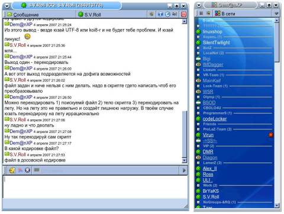
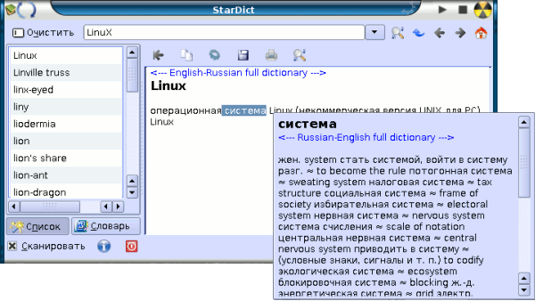

Оглавление:
- Введение
- Файловые менеджеры
- Медиаплееры
- Работа с интернет
- Интернет-пейджеры
- Другое
- K3B - запись дисков
- Переводчик StarDict
- Клиент windows локальных сетей - smb4k
- Редактор изображений GIMP
- Офисный пакет OpenOffice
- Keybord switcher - XNeur
- Редактор Kate
- Украшательства
- Заключение
- Благодарности
Введение
Ну вот ты и поставил линукс. Перед тобой совершенно новый мир, полный возможностей. Но всё придётся начинать сначала. Сразу после установки линукса попадаешь в новый дружелюбный мир, готовый исполнить любое твоё желание быстро и без глюков. Он ждёт твоих действий. Но если ты в этой операционке первый раз - то неизвестно не только как настраивать систему, но и вообще в какой программе писать текст, слушать музыку, получать почту и т.п. ... Эта статья служит обзором самых лучших и используемых на мой взгляд программ. Она даже не претендует на роль полного руководства, её цель - хоть немного облегчить жизнь начинающим линуксоидам :)
Моим любимым десктоп-менеджером является KDE, поэтому некоторые программы будут принадлежать этому пакету. Вообще при установке советую по возможности ставить и Gnome и KDE, т.к. это 2 наиболее распространённые среды и различные программы могут писаться как с использованием KDE, так и с использованием Gnome. Кстати, десктоп-менеджеров сейчас существует огромное количество. Экспериментируй - возможно тебе понравится что-нибудь другое.
Итак, первой программой будет файл-менеджер mc. Без файл-менеджера жить вообще невозможно. mc внешне похож на виндошный far, norton commander и т.д. Но в линуксе это удобный инструмент, умеющий практически всё, и выполняющий свои задачи практически молниеносно.
В mc есть прекрасный встроенный ФТП клиент. Для того, чтобы им воспользоваться, достаточно в меню нужной панели выбрать пункт "FTP-соединение".
Также имеется прекрасный просмотрщик и редактор файлов. Вызываются соответственно клавишами F3 и F4. Редактор, между прочим, имеет ещё и неплохую подсветку синтаксиса большинства языков, т.е. для того чтобы писать на чём-нибудь вам даже не потребуется выходить из любимого mc.
Естественно, mc имеет удобный интерпретатор консоли внизу. Для того, чтобы скопировать туда имя текущего файла жмёшь Alt+Enter и радуешься :) Если одной строчки мало, либо нужно посмотреть на ответ скрипта есть хоткей Ctrl+O.
Имеется ещё набор шикарнейших горячих клавиш. Например, не нужно глазами просматривать весь список файлов, жмёшь Ctrl+S и пишешь по буквам имя нужного файла, а в это время mc прыгает по списку на нужное место сам (но также не забывай, что имена файлов регистрочувствительны, т.е. маленькие и большие буквы отличаются).
 Если в командной строке хочешь вернуть предыдущую введённую тобой команду - Alt+P и Esc+P тебе в помощь :) Причём, в последнем случае вовсе не обязательно жать обе клавиши одновременно ;)
Если в командной строке хочешь вернуть предыдущую введённую тобой команду - Alt+P и Esc+P тебе в помощь :) Причём, в последнем случае вовсе не обязательно жать обе клавиши одновременно ;)Кстати, в mc - и Alt и Esc - это клавиша Meta, поэтому работают и Alt+P и Esc+P, и Alt+S и Esc+S, и т.д. они взаимо заменяемы.
Кстати, приучайся максимально работать на клаве и не юзать мышь. Например, для того, чтобы выделить кучку файлов совсем не обязательно юзать мышь - Ctrl+T или Insert тебе в помощь! :) Для более точного знания горячих клавиш советую посмотреть статью Некоторые полезные клавишные комбинации в Midnight Commander'е.
Midnight Commander, как ни странно, поддерживает скины. А выражаются они в замене цветов на другие. Про скины и дополнительную настройку можно прочитать ТУТ.
Однако mc нелюбим новичками. Всем подавай привычное тоталовское гуи, ассоциацию с файлами как в Konquerror и т.д. Специально для таких людей создан Krusader. Его авторы пытались сделать программу максимально удобной, чтоб ей могли пользоваться как начинающие, так и профи. В window$ такой программой является Total Commander. У них это очень даже получилось - изначальная неплохая настройка, умение работать с архивами и т.д. и т.п. И, конечно же, ТОРМОЗНУТОСТЬ GUI-шного приложения. Сам попробуй полазить по вместительным папкам с помощью Krusader и mc. Даже на глаз разница очень видна. Не хочется терять лишние секунды своей жизни из-за тормознутости софта, а ведь эти секунды могут вылиться за жизнь в часы или даже годы! ;) Но тем не менее помни, каждый выбирает для себя сам.
Кроме всех этих прелестей, крусадер добавится в меню KDE в двух экземплярах - в обычном и в режиме супер-пользователя. По системным файлам, требующим права рута, намного удобнее лазить в mc, но если уж очень припёрло - мож и в крусадере с правами рута :)
Редактор и просмотрщик (в одном лице) в krusader тож подкачал. Приложение графическое, грузится долго, а по возможностям не дотягивает не только до kate из пакета KDE (про которую мы поговорим позже), но и до многих других простых редакторов.
Т.к. krusader не только отличный "клон" тотала, но ещё и linux-приложение, то разработчики попытались добавить в свою программу ещё и гибкость настройки линукс-программ. Им это почти удалось и крусадер легко поддаётся настройке.
Крусадер, конечно же не так плох, как здесь написано. При его использовании ты сразу найдёшь много других дополнительных плюсов krusader, которые облегчат тебе жизнь. Но помни и о его недостатках.
Кстати, файловый менеджер - ублюдок порождённый убогостью командной строки DOS, а затем и выньдоуз. Средствами того же bash'а бОльшая часть задач решается проще (или значительно проще) и эффективнее.
 По-моему, лучший медиаплеер для *nix-систем - Amarok. Имеет туеву кучу настроек и возможностей, работает на движках gstreamer, xine или helix, проигрывает радио и т.д. и т.п. Настроек и возможностей реально много. Разве что, не умеет тапочки к постели приносить и яичницу по утрам готовить - всё остальное есть.
По-моему, лучший медиаплеер для *nix-систем - Amarok. Имеет туеву кучу настроек и возможностей, работает на движках gstreamer, xine или helix, проигрывает радио и т.д. и т.п. Настроек и возможностей реально много. Разве что, не умеет тапочки к постели приносить и яичницу по утрам готовить - всё остальное есть.Но как используются большинство аудиоплееров? Юзер открывает плейлист, загружает нужный музон, сворачивает плеер и начинает заниматься чем-то своим. При этом обычно плеер сворачивается куда-нибудь глубоко в трей и про него напрочь забывается... До тех пор, пока не начнёт играть какая-нибудь скучная песенка и не захочется её переключить. Или пока просто не захочется нажать паузу. Тогда нужно опять лезть в трей, доставать плеер, искать в его интерфейсе малюююсенькую кнопочку "пауза" ;) Амарок отличается от многих других плееров тем, что поддерживает глобальные комбинации клавиш. Это очень приятная "мелочь" очень облегчает жизнь и элементарно настраивается.
Ещё одна приятная мелочь - полноценная поддержка трея. Т.е. по хоткею amarok уходит в трей и выполняет только своё непосредственное назначение - качественно проигрывает музыку, при этом не засоряя рабочую область экрана.
Как и все linux-приложения amarok хорошо настраиваем. Можно изменять цветовую схему. Но "скинов" как таковых нет, т.е. изменить можно только цвета :( Цвета, кстати, сами подстраиваются под цветовую схему КДЕ, что очень приятно. Но если уж очень хочется персонализировать свой плеер всегда можно поиграться с цветами и получить что-то реально уникальное! ;)
Ещё одной приятнейшей фичей amarok является фильтр по текущему плей-листу. Очень удобно, между прочим.
Но всё-же главная фишка Amarok - музыкальная коллекция. Для её использования при запуске нужно задать каталог, в котором хранится музыка, и тогда плеер просканирует теги всех треков и создат базу данных по которой в дальнейшем легко вести навигацию и поиск.
Грешно было бы не упомянуть в разговоре про аудиоплееры один из самых используемых - XMMS. Это клон виндошного Winamp. Настроек и возможностей по-меньше, чем в его виндошном собрате, но внешне они практически одинаковы. Насколько я помню, XMMS даже поддерживает скины от винампа. Для xmms написано огромное количество плагинов, чего не скажешь об amarok. Если тебя интересует какой-нибудь уж сверх-экзотический формат музыкальных файлов, то поищи в инете - наверняка найдёшь плагин для xmms. Установки глобальных хоткеев в настройке xmms я не нашёл, поддержки трея - тоже. Ещё из багов - при открытии некоторых файлов упорно зависает и потом долго не хочет запускаться :) Вобщем, по-моему, xmms уже потиху уходит в мир иной, но количество плагинов для него очень даже радует...
Кстати, когда люди увидели, что XMMS умер, начали появляться его множественные клоны. Одним из лучших является audacious. Переписан он с использованием библиотеки GTK2, даже держит плагины от XMMS. Так что если не хочешь отказываться от любимого XMMS - юзай какого-нибудь его клона :)
mplayer - одна из воистину великих кроссплатформенных программ. Да-да, именно кроссплатформенных - mplayer можно использовать даже под windows. Одной из главнейших фич mplayer является то, что он в линуксе может использовать виндошные!!! кодеки, которых уже сейчас накопилось немало. Т.е. проблем с форматами файлов в mplayer просто нет! mplayer при помощи своих продвинутых алгоритмов может проигрывыть даже то видео, на которое у него нету кодеков. Например, в винде мне часто приходилось обновлять DivX, чтоб просмотреть какие-либо новые фильмы. В mplayer просто загружаем нужный фильм и смотрим :) Конечно, качество не всегда такое хорошее, как с родными кодеками, но смотреть всё же можно. А с предустановленными win32 кодеками вообще всё просто супер.
Также можно классно повыеживаться перед друзьями, собрав mplayer с поддержкой библиотечки libcaca и показав вывод видео цветными символами прям на экран консоли! Для этого даже x-server не обязателен. Единичные картинки, выводимые таким образом, не особо разборчивы, но при просмотре видео картинка движется и в большинстве случаев можно разобрать, что там происходит :) Главное, фильм/клип правильно подобрать! :-D Также через libcaca приятно смотреть фильмы, которые уже смотрел, например неплохо идёт матрица (проверено опытом).
Как видно на скриншоте, поддержка скинов в gui mplayer просто шикарная. Правда, в windows прозрачности слегка хромают, но это можно понять - ведь mplayer программа, родная для *nix-систем, а под винду только портирована... Кстати, виндошная версия mplayer позволяет грузить специальные *nix-кодеки, которые можно скачать с сайта http://www.mplayerhq.hu
Кстати, для того, чтобы с удобством просмотреть тот или иной фильм, вовсе не обязательно загружать графическую оболочку gmplayer. Для удобной работы в mplayer существует проработанная система хоткеев. Например, для того, чтобы развернуть плеер на весь экран достаточно нажать клавишу F, чтоб поставить на паузу - ПРОБЕЛ, чтоб перемотать фильм вперёд на 10 сек. / 1 мин. / 10 мин. - стрелка вправо / стрелка вверх / Page Up . Полный список горячих клавиш можно почитать по команде man mplayer. Кстати, не бойся пользоваться мануалами - в них почти всегда можно найти много чего интересного.
Ну, с браузерами в linux у тебя вообще не должно быть никаких проблем :) Ибо величайшие браузеры Opera и Mozilla Firefox полностью кроссплатформенны и одни из самых используемых (после M$ IE, конечно же ;) ). Opera здесь рассматриваться не будет, т.к. её достаточно просто поставить и юзать. А вот некоторые очень полезне возможности firefox используют не все.
В firefox очень широко развита система расширений и их уже написано огромное количество на любой случай жизни. При помощи расширений из обычного браузера легко можно сделать всё, что угодно - от удобного увеселяющего инструмента, до машины убийства. Для того, чтобы скачать дополнения, переходи по следующей ссылке: https://addons.mozilla.org/ru/firefox/browse/type:1 и ставь понравившиеся плагины :)
Например, я при написании сайтов постоянно юзаю Web Developer плагин. Позволяет работать с формочками, кукисами, включать и отключать всё что угодно, включая отображение html-элементов. А главное, помнит адреса всех валидаторов кода, которыми желательно всегда проверять свой код, и которые так лениво запоминать! :)
Ещё один часто используемый плагин - Forecastfox, который показывает прогноз погоды и текущую погоду. Как говорилось в фильме ][0tt@бb)4 - "называется, впадлу встать и в окно посмотреть" :-D Особенно данный плагин удобен тем, что настраивается его местоположение. Напрмер у меня он висит в панели toolbar-menubar в правом верхнем углу.
Поддержка скинов тоже шикарна. Вобщем, заходи, пробуй, качай плагины. Благо, все они весят в районе 100-300 kb, что копейки относительно "веса" самого браузера.
Можешь называть меня фаном продуктов от мозиллы - это почти так :) Но это не из-за моих личных убеждений, а из-за того, что они делают реально хорошие продукты. И все они opensource! Т.е. кто угодно может просмотреть код, а если увидеть баги, которые лежат на самом видном месте ;) , то можно легко за заслуги перед родиной попасть в глобальный "About" программы и стать известным по всему миру как великий багоисправитель :) А потом можно сколько угодно понтоваться перед друзьями, которые, конечно же, не смогут найти ниодного бага! :)
Thunderbird имеет много общего с Firefox. А именно: прекрасная работа с прокси (в том числе, и получение/отправка pop/imap/smtp почту через HTTP и Socks прокси), отличная поддержка скинов, удобный и очень похожий интерфейс и т.д. и т.п. Если тебе нравится Firefox - то понравится и Thunderbird :)
Как обычно - лезь на сайт программы и выкачивай все самые "вкусные" плагины. Я для себя скачал парочку скинов и словарь для проверки русской орфографии.
Ничем особо выдающимся и отличающим Thunderbird от других мыл-клиентов не обладает. Просто шустрый, удобный и приятный клиент. Если чем-то не понравился Thunderbird можно попробовать поюзать Ximian Evolution или KMail. К сожалению, KMail я так и не смог пустить через НТТР-прокси, потому толком поюзать его не смог :(
А вот Evolution - клон Micro$oft Outlook под Linux, написанный с использованием GTK. Возможности довольно близки в Thunderbird, но с русскими кодировками иногда бывали проблемы, да и скорость поменьше.
А из консольных могу посоветовать pine - мощнейший клиент с огромным количеством настроек. Я так целиком во всех них и не разобрался. :) Но консольные приложения - тема отдельной статьи, а по pine вообще целую книгу написать можно :)
Следующей программой будет менеджер закачек D4X. Это один из лучших менеджеров закачек для Linux и написан нашим соотечественником - Кошелёвым Максимом. Как следствие, проблем с русским языком у этой программы просто нет. Настроек данная программа имеет довольно много, но они не нагружают интерфейс, и кажется, что всё легко и просто. Для обычных пользователей это так и есть. Но если ты продвинутый пользователь, то сможешь настроить буквально всё. Вплоть до того, что d4x будет представляться intertet explorer'ом версии 3.4 и работающем в window$ 3.1 ;) :D
Также программа корректно работает с прокси. Интерфейс тоже изменяем. Для приложения, написанного на GTK, d4x выглядит очень даже неплохо. Можно настраивать звуковые и графические темы. Лично я сразу сменил стандартный скин на что-то более приятное глазу.
Также d4x ведёт подробнейшую статистику по каждой закачке (вплоть до заголовков пакетов). Так что если скачал где-то файл и забыл на него ссылку - d4x тебе поможет :)
Приятной неожиданностью было то, что даже при аварийном завершении d4x может продолжить закачку. Т.е. если запустить закачку, а потом убить d4x командой killall d4x, то она уйдёт из списка закачек. Зато если заново создать такуюже закачку (и закачивать файл в ту же папку), то закачка продолжится с того места, на котором была оборвана.
 Раз уж разговор зашёл про проги, для работы с сетью интернет, рассмотрим SIM - отличный ICQ-пейджер (и не только ICQ ;) ). А от других пейджеров он отделяется тем, что почти не имеет проблем с русской кодировкой (в версии 0.9.4.3 я их уже не замечал) и более-менее удобный интерфейс. Написан с использованием библиотеки QT, соотвественно и поддержка скинов у него QTшная (т.е. те темы, которые установлены в вашем KDE в SIM держаться будут :) ) Также нормально работает с треем. Хоткеи поддерживает, но тут они обычно не нужны.
При установке не забудь подправить настройки. А именно, зайти в "Настройки" -> "Безопасность", поставить там галочку "Не показывать свой IP-адрес" и снять "Разрешить пользователям видеть мой статус через HTTP" (чем введёшь в заблуждение многих спам-ботов). Советую хорошенько полазить по всем настройкам и настроить буквально всё. Например, меня бесит заставка при запуске SIM, но она легко убирается в опциях модуля "Заставка". Модуль "Иконки" позволяет устанавливать свои наборы смайлов, вместо не очень красивых стандартных. Очень удобен модуль "Подстановки", например у меня "[p" заменяется на "хз" :) Модуль "Прокси" обеспечивает поддержку прокси, даже НТТР :) Это особенно удобно для людей, у которых весь интернет идёт через прокси-сервер, а другой возможности соединения с интернетом нету...
Ну и конечно же не забудь поставить какой-нибудь красивый фон на главное окно программы :) Белый цвет нынче, конечно, в моде, но это не для нас :) Вобщем, экспериментируй и настраивай систему под себя! :)
До перехода в линукс я никогда не слышал о Jabber (возможно, потому что не слушал :) ). А очень зря. Jabber - мощный, удобный, простой и открытый xml-протокол. Он привлёк многих людей, но не только этим. В интернете есть огромная куча Jabber-серверов и каждый, кто захочет, может скачать себе сервер и установить его хоть на своём домашнем компьютере. Также джаббер может быть надстроечным протоколом для других, это так называемый "транспорт" других протоколов. Т.е. физически можно быть зарегистрированным только на Jabber-сервере, а он уже вам и RSSку последнюю почитает, и в аське сидеть можно, и в Mail.ru-агенте сидеть, получать уведомления о приходе новой почты и т.д. - и всё это в одном окне всего одной программы! PSI к тому же ещё и поддерживает возможность запускать несколько записей одновременно. Например, у меня Mail.ru агент настроен на сервере jabber.ru, а ICQ-транспорт и RSS-читалка bash.org.ru - на jabber.mipt.ru. Вот джентельменский набор транспортов на jabber-серверах: ICQ, Mail.ru-agent, MSN, AIM, Yahoo, IRC, e-mail notification. Впечатляет, не правда ли? К тому же, почти все сервера поддерживают публичные чат-комнаты, в которых можно пообщаться с людьми с общим интересом.
Поддержка скинов у PSI QT-шная. Глобальные горячие клавиши не поддерживаются. Зато, настраивается он довольно гибко. Например, я привык к ICQ-шному стилю: каждый чат не в отдельном окне, а в отдельной вкладке; постоянное сидение программы в трее; свой набор звуков и т.д. Всё это PSI поддерживает. Изначально настроен довольно коряво (по крайней мере, мне было очень непривычно и неудобно). Но после часа лазанья по настройкам и попыткам их изменять PSI стал очень удобным, приятным и привлекательным. Как и в SIM, поддерживаются смайлики в формате jisp. Это делает набор смайлов неограниченным.
А теперь немного настроек. Чтоб PSI автоматически получал ники контактов с сервера, а не добавлял человека в контакт по его ID (типа 606986@icq.jabber.mipt.ru) нужно в файле /PsiData/profiles/default/config.xml заменить в параметре autoResolveNicksOnAdd значение false на true. Да, еще неплохо бы сделать, чтобы всё само авторизовывалось (дело в том, что после добавления icq-транспорта все Ваши контакты попросят авторизации). Ставим галочку в настройках в Events -> Auto-autorize contacts и убираем у Notify when autorization was received. (спасибо michwill за эти советы)
IRC-сети сейчас становятся всё более популярными. Количество IRC-клиентов под Linux также стремительно растёт. Одним из самых популярных клиентов является KVIrc. И этот клиент есть за что уважать. Он поддерживает графические смайлики, аватары. Ни один другой открытый IRC клиент на данный момент похвастаться этим не может. Интерфейс, а конкретно поддержка скинов и настраиваемость, у KVIrc тоже очень хороша. Также KVIrc поддерживает отправку/приём файлов и общение голосом (между линукс-машинами).
Скин по умолчанию в квирке довольно уродливый, но он легко заменяется на нормальные скины, которые можно скачать на сайте программы: http://www.kvirc.ru.
Также KVIrc имеет мощнейший встроенный скриптовый язык программирования, который позволяет доделать то, чего не хватает в программе. Например, тебе нужно чтоб при приходе мессаги звучал какой-нибудь коротенький звук. Для этого лезь в "Сценарии" -> "Редактировать события". В списке событий выбирай "OnChannelMessage" и создай ему правым кликом мыши новый обработчик. Далее в обработчике тебе нужно написать: snd.play " /.kvirc/msg.wav" . После этого сохраняй событие и кидай файл msg.wav в подпапку /.kvirc/ твоей домашней директории. Всё, теперь звук проигрывается.
Запись дисков прочно вошла в нашу жизнь. Нужно ли сделать бэкап, или скопировать принесённый другом фильм - почти ежедневно каждый пользуется записью компакт дисков. Программой де-факто для записи дисков в линукс является K3B. Этот программный продукт умеет: копировать CD/DVD, записывать CD/DVD из образа, записывать образы, очищать диски, RIPать аудио/видео/DVD диски, создавать музыкальные и eMovix диски. Вобщем, пакет довольно мощный и по своим возможностям постепенно приближается к Ahead Nero под Windows. Единственное, что огорчает, что русскоязычные файлы и папки в винде потом читаются в неправильной кодировке. Это исправимо настройкой. Для этого непосредственно перед прожигом нужно зайти на вкладку "Файловая система" -> "File system" -> "Настроить", там пометить галку Force Input Charset и выставляешь кодировку, которая соответствует локали (чаще всего это utf8 или koi8-r). [см. скриншот]
Интерфейс программы довольно приятен, поддерживает скины. Сверху расположен файловый менеджер, а снизу - менеджер файлов текущего проекта. Всё интуитивно понятно и доступно.
В настройках программы не забудьте указать стандартный каталог временных файлов, если у вас мало веста в /tmp. А в дополнительных настройках можно установить галочку "Автоматически очищать CD-RW и DVD-RW", т.к. если в процессе копирования впихнуть ему не пустой RW-диск, то k3b выругается, что диск не пуст и прервёт процесс. Тогда придётся вручную очищать диск (тряпочкой или мелким наждаком ;) :D ), а после этого записать диск из образа.
 Следующей будет программа-переводчик - StarDict . Она не имеет своих встроенных словарей. Но это далеко не минус данной программы, ведь она может "питаться" не только словарями с предопределёнными языками. Какие словари ты установишь - столько языков будет знать данная программа. Даже если ты жить не можешь без переводчика c немецкого на французский, StarDict поможет тебе!
Одна из полезнейших фич StarDict - перевод на лету, причём для этого даже не нужно сворачивать текущее приложение и переходить в словарь. StarDict может автоматически показывать перевод выделенного текста во всплывающем окошке (см. скриншот). Автоматическое отображение перевода выделенного слова не всегда нужно, поэтому есть така опция "Сканировать только если модификатор нажат". Т.е. при нажатой определённой клавише на клавиатуре выделить текст, то появится всплывающее окошко с переводом.
А словари для StarDict можно скачать ТУТ (сайт периодически падает, но его обычно восстанавливают :) ). В форме поиска нужно выбрать нужные языки, а также не забыть выбрать формат "StarDict". После этого жмякай "Submit" и радуйся количеству найденных словарей (англо-русских он нашёл 78 штук). Скачанные словари нужно распаковывать в директорию /usr/share/stardict/dic/ .
Далее по списку клиент windows локальных сетей smb4k. Собственно, это всего лишь фронтенд ("морда" :) ) для samba - файловой системы windows локальных сетей, но в ней есть всё, что нужно. А именно: просмотр доступных рабочих групп, компьютеров в них, просмотр активных шар на них и монтирование этих шар в корневую файловую систему (в каталог /smb4k/). Т.е. обычным кликом подмотировал нужные шары и полез лазить по ним из любимого mc, предварительно закрыв smb4k :)
По умолчанию smb4k настроена довольно неплохо - корректо просматриваются все группы, монтируются англоязычные шары. Чтобы монтировалось всё нужно подправить используемые кодировки. Для этого лезь в Settings->Configure Smb4K->Samba -> mount и установи опцию "Linux charset" в кодировку твоей локали (чаще всего utf8 или koi8-r), а "Server codepage" в cp866 (см. скриншот). После этого всё корректно монтируетсся и просматривается.
Также советую включить опцию "Use super user privileges to force the unmounting of (broken) shares", которая разрешает размонтировать побитые примонтированные шары с правами root. Такое бывает довольно часто, что только успел подмонтировать шару, а юзер уже убежал из сети, но шара всё-равно битая...
Кстати, привычка открывать файлы для сети через виндошные шары - это плохая привычка. В Linux обычно эти задачи решаются при помощи ftp или NFS (ну и CUPS). При их настройке ты будешь знать всё о выложенных файлах, и сможешь всё править. Например, парольный/беспарольный доступ, права доступа к конкретному файлу и т.д.
GIMP - GNU Image Manipulation Program - кроссплатформенный графический редактор изображений. В windows для этих целей обычно используется Adobe Photoshop. Но GIMP это далеко не клон фотошопа. Они даже не похожи. После фотошопа GIMP кажется маленькой, не удобненькой, кривой программкой. Но это далеко не так. Просто GIMP абсолютно другой и к нему нужно привыкнуть, ему нужно учиться. Могу поспорить, что никто с первого раза не начал качественно работать в Photoshop, а довольно долго учился этому искусству. В GIMP ситуация аналогична. Только если ты уже знаешь основы работы с изображениями, то в GIMP тебе просто нужно будет найтим нужную кнопочку/пункт меню и выполнить нужное действие.
GIMP имеет многооконный интерфейс. Главное окно и окно "Слои, каналы, контуры" подстраиваются под текущее окно с редактируемым изображением.
Некоторых привычных кнопочек фотошопа в GIMP нет. Зато есть большое количество своих, к которым быстро привыкаешь, и которым ты будешь приятно удивлён. Например в GIMP около 80 видов различных градиентов. Также у GIMP есть большое количество стандартных расширений, которые помогут тебе создать различные кнопочки, текстуры, логотипы, темы для web-страниц.
Также GIMP сейчас активно развивается. И это очень радует. Постоянно появлюяются новые версии, добавляется новый функционал. И вполне вероятно что скоро GIMP сможет полностью заменить фотошоп вообще.
А кто в windows может жить без M$ Word, Excel и т.п.? Да почти никто! Я уверен, что и тебе нужны программы, решающие аналогичные задачи. И они есть. Пакет называется OpenOffice. В нём ты сможешь найти: Writer (аналог Word), Calc (аналог Excel), Impress (аналог PowerPoint), Base (аналог Access), Math (работа с математикой и формулами), Draw (рисование). Все они полностью или почти полностью поддерживают форматы своих виндошных собратьев.
Как видно из скриншота, Writer почти полный клон Word. Интерфейс полностью аналогичен, функционал примерно тот же, менюшки похожи. Структура меню немного отличается и сформирована немного по-другому. Так что если не найдёшь пункта "Параметры страницы" в меню "Файл" не расстраивайся - он в меню "Формат" :)
Есть в OpenOffice и свои плюсы. Например, он абсолютно бесплатен :) Работать с таблицами в OO Writer даже приятнее, чем в Word. Кстати, для справки, по ISO международный формат текстовых документов - ODT - формат документов OO Writer, а не DOC от M$. Уже за счёт это стоит задуматься, а может OpenOffice действительно лучше продуктов от M$ ?
Проверка русской орфографии в Writer похуже, чем в Word. Но тем не менее она есть и работает довольно неплохо :)
OpenOffice является бесплатной частью платного проекта StarOffice от Sun Microsystems (c). Поэтому если есть желание и деньги получить ещё нечто более качественное, то можно купить StarOffice.
Вобще WYSIWIG ("что видишь на экране, то и получишь при печати") в деле оформления текстов - далеко не самый эффективный инструмент.
M$ Office - удачно внедрённый на рынок паразит на начальном этапе прощающий недостаточную квалификацию пользователей, зато потом (после привыкания) с лихвой пожирающий рабочее время на (в большинстве случаев) неправильном использовании неподходящего инструмента.
Довольно часто у своих виндошных друзей я замечаю установленным Punto Switcher или что-то подобное. Да и самого иногда бесит, когда по введению какого-либо куска текста он получается в другой раскладке. Для этого и были придуманы автоматические переключалки языка ввода. Под Linux одной из лучших переключалок является XNeur с графической оболочкой gXNeur. Она тихонько сидит в трее и выполняет свою работу. В отличие от переключалки Sven gXNeur пихает в трей флаг страны текущего языка. Гораздо приятнее видеть в трее красивый флаг России, чем какой-то непонятный тёмный квадратик с надписью "sven". Также XNeur сохраняет для каждого окна свою раскладку. Например, в mc будет установлен английский язык, а в kate - русский. И не нужно каждый раз судорожно переключать язык на нужный при переходе из окна в окно.
А теперь несколько неприятных моментов. Эвристика у XNeur, конечно, хорошая и в большинстве случаев язык переключает правильно. Но переключение далеко не всегда нужно. Например, мне в mc долго пыталось сменить "cd /etc/init.d/" на "cd .уес.штшеюв.". Пришлось для приложения konsole сделать исключение - запретить автоматическую коррекцию ввода. Или ещё пример. В чатах нынче очень мало кто общается на чисто литературном языке, а довольно часто пролетают слова типа "хз", "ща", "имхо", "нах" и подобные. Так вот XNeur долго и упорно переключал моё любимое "ща" в английское "of" :)
Вобщем, сейчас у меня gxneur висит в трее, запоминает раскладку для каждого окна, а корректирует ввод только по хоткею. Хоткеи посмотреть и настроить можно в опциях.
Ну вот и пришла очередь Kate. Её я люблю всей душой и не представляю свою жизнь без неё :) Когда я только пришёл в мир Linux я искал удобный редактор, в котором можно было бы с комфортом программировать. Хотя бы на PHP. Для С++ мне уже тогда пригляделся KDevelop. Для HTML пригляделась Quanta. И лишь позже я увидел, что и то и то базируетcя на Kate. Kate поддерживает большинство современных языков (программирования, баз данных, скриптовых языков, языков разметки и т.п.). Причём синтаксис подсвечивается мягко и удобно. Подсвечиваются закрывающиеся-открывающиеся скобки. Есть возможность сворачивать блоки кода. В то же время Kate довольно лёгкое приложение - грузится быстро, базовый интерфейс довольно простой. Kate - это больше очень навороченный программистский блокнотик, чем мощная тяжёлая среда разработки. Единственное, чего мне не хватает в Kate - возможности автодополнения функций текущего языка. Всё остальное есть: отступ в строке по различным параметрам, подсветка, поддержка большого количества кодировок, управление регистром букв, проверка орфографии (через ispell), непосредственная работа на ФТП (средствами KDE), удобный поиск по файлам, встроенный терминал, возможность одновременной работы с несколькими файлами.
По умолчанию Kate настроена просто шикарно. Можно просто садиться и работать. Единственное, что можно сменить - кодировку по умолчанию. Например, если ты чаще всего редактируешь/пишешь файлы в кодировке cp1251, а локаль у тебя стоит другая. Я себе также сменил шрифт и немножко поизвращаля с внешним видом :)
SuperKaramba - стандартная украшалка десктопа от KDE. Она позволяет выводить специальные маленькие приложения прямо на рабочий стол. Это различные часики, календарики, прогнозы погоды, поисковички, онлайн-переводчики, системыные мониторы и т.д. Они обычно отличаются небольшим размером и красивым внешним видом - прекрасно вливаются в содержимое твоего десктопа.
К сожалению, обычное приложение при помощи SuperKaramba на рабочий стол не повесишь - нужно качать специальные аплеты. Но это вовсе не сложно. Для начала запусти superkaramba. В появившемся окне будет выбор всего из 2 пунктов: "Интернет" и "Локальный файл". Выбирай первый вариант и жми "Скачать аплеты". Появится окошко для получения аплетов. Слева список серверов с аплетами. Его не трогай. Посередине список аплетов, который можно отсортировать по рейтингу, популярности и по дате добавления. При клике на конкретный пункт списка загрузится его описание (на английском языке) и маленький скриншот текущего аплета. К счастью, эти аплеты обычно весят довольно мало и можно качать почти все без разбору, а потом оценивать уже на своём рабочем столе :)
По умолчанию аплеты можно двигать по рабочему стол мышкой. Во время выбора положения аплета это довольно удобно, но не в повседневном пользовании. Поэтому после правильного размещения конкретного аплета советую кликнуть по нему правой кнопкой мыши и кликнуть "Фиксированная позиция". После этого аплет можно будет сдвинуть с места только сняв данный флажок.
А чтоб трей не засорялся "лишним" приложением кликни по нему правой кнопкой мыши ип выбери "Убрать значок из системного лотка". После этого ты в любой момент сможешь запустить панель управления superkaramba кликнув по любому из аплетов на рабочем столе правой кнопкой мыши и выбрав пункт "SuperKaramba".
Следующая украшалка - Conky. Это легковесный системный монитор с действительно гигантскими возможностями. Зачем же использовать Conky, если в SuperKaramba навалом свои мониторов, которые и настроены лучше и выглядят красивее? Да затем, что SuperKaramba пожирает довольно много оперативной памяти и не все могут или хотят её использовать. Также системные мониторы SuperKaramba не так хорошо настраиваются, как Conky.
По умолчанию Conky сконфигурирован терпимо, но лучше переконфигурировать Conky под себя. Советую зайти на страничку скриншотов Conky, выбрать там наиболее понравившийся дизайн и править его в соответствии со своими нуждами. Для этого нужно скачать с сайта файл conkyrc и скопировать его к себе в домашнюю директорию, чтоб он стал /.conkyrc. После этого запустить conky. Если что-то не так (исчезают ярлыки с рабочего стола или что-то подобное) - нужно поэкспериментировать с параметром own_window_type (предварительно включив own_window). У меня всё корректно работает при значении override.
Вобще Conky подразумевает правку своего конфига. Ведь каждому нужно своё. Но conky может отобразить буквально всё. Некоторые интересные примеры и про более тонкую настройку можно прочитать на http://gentoo-wiki.com (в основном для дистрибутива Gentoo, но на примере данной статьи можно понять, как настраивать Conky).
Если Conky подразумевает ручную правку своего конфига, то в этом смысле GKrellM2 его полная противоположность. Сразу после установки его можно запускать, использовать и настраивать абсолютно не используя другие приложения. Набор поддерживаемой выводимой информации по умолчанию в GKrellM2 довольно высок: график загруженности и температура процессора, график процессов, график использования диска (для каждого раздела можно вывести свой график), график использования сети, памяти, свопа, свободного места на диске, аптайм и т.д. и т.п. Для настройки всей этой прелести достаточно кликнуть по GKrellM2 правой кнопкой мыши и нажать "Configure". Далее настройка воистину легка и интуитивно понятна - просто кликаешь на галочки, смотришь, на что они влияют и всё. В итоге при минимально потраченном времени ты получишь быстрый и удобный системный монитор, заточенный под твои нужды.
По умолчанию в GKrellM2 всего один скин, но выглядит он очень даже неплохо. Однако скинов на этот прекрасный монитор есть огромное количество. Их можно взять здесь: http://www.muhri.net/gkrellm/. На скриншоте виден скин ZixSaw2. Как видишь, поддержка скинов просто шикарная. Вобщем, лезь на сайт, посмотри на них сам и выбери тот, который лично тебе по душе! :)
Плагинов для GKrellM тоже существует огромное количество. Они позволяют очень расширить список выводимой информации. GKrellM мало того, что умеет выводить информацию, так он ещё и умеет её изменять! Т.е. ты сможешь управлять громкостью, гаммой, любимым медиаплеером и т.п. прямо с рабочего стола.
Лично мне понравился плагин GKrellFlynn, который выводит забавную рожицу на ваш системный монитор. Рожица эта напоминает рожицу из левого нижнего Wolfenstein 3D и вызывает страшную ностальгию по временам появления первых компьютеров, первых игрушек и первой своей пройдённой трехмерной игрушке. Кроме того, рожица показывает состояние загрузки процессора. Если процессор загружен на все 100, то рожа вся в крови, разбита и явно требует отдыха, намекая чтоб хозяин не так сильно мучал свой компьютер! ;) :-D
Еще один полезный плагин - gkrelltop, который является графическим зеркалом команды top на твой системный монитор - т.е. выводит текущие процессы, которые больше всего используют системные ресурсы.
Плагин Volume Plugin позволяет контролировать громкость звука на твоём компьютере. Любую. Плагин сам найдёт, каким устройствам можно изменить громкость и выведет полный список каналов, доступных для регулирования. Любой из них ты можешь вынести к себе в пользовательскую область.
Вобщем, плагинов навалом. Полный список можешь посмотреть на странице плагинов программы.
Если Conky ты мог заставить выводить всё, что угодно, то GKrellM может показать только то, что умеет он сам и его плагины. Так что если захочешь увидеть в GKrellM что-нибудь экзотическое - тебе придётся написать свой плагин.
Заключение
Здесь рассмотрены программы, которые использую я и считаю их самыми полезными и нужными. Список этот далеко не полный. Моё личное мнение может отличаться от мнения общественности, так что ещё раз хочу напомнить: Linux - абсолютно свободная операционная система. В ней каждый имеет право на собственное мнение. Так что ищи, пробуй, делай - никто за это не накажет тебя, а лишь поддержит. Помни, каждый решает за себя сам!
Благодарности
Спасибо ребятам с Gentoo.RU, которые помогали мне в написании данной статьи за помощь в нахождении ошибок, за исправления, за новые идеи. А именно:
Anarchist за множественные исправления и дополнения
dernik за исправление ошибки в описании K3B
DancingFire за дополнение в описании Amarok
oklamster за дополнения списка программ и новые идеи
Отдельное спасибо IMDagger'у, который является главным редактором данной статьи, за толковые и конструктивные замечания, за разъяснения в неясных ситуациях, за исправления ошибок, за помощь в написании и т.д.
Комментарии :
Замечательная статья, так держать!
Для новичка просто клад.
отличная статья, спасибо.
Надо бы продолжить в таком же духе и
выдать на гора "Обзор основных Linux-программ-2", "Обзор основных Linux-программ-3" ...
А ещё про xneur можно добавить, что он любит самопроизвольно выключаться, забивать на режим самообучения, изменять не только нужное слово, но и пару-тройку предыдущих, потом, изменив слово, он не удаляет то, что было написано не в той раскладке, и потому приходится работать ручками...
В общем, до эталона в лице ЗгтеPunto Switcher (Dybvfybt(Внимание! перед вами НАМЕРЕННО не устраненный отмеченный мною выше глюк!) далеко... очень.
Честно сказать, я с трудом наковырял программ для этого обзора :) Просто другие программы либо довольно сложны и долго настраиваются, либо консольные. Есть план написать про "Переход с иксов в консоль" и там рассмотреть консольные альтернативы + свои прожки
А насчёт xneur. Он ещё далёк до совершенства, но переключалки лучше его я не нашёл :)
Классная статья, я много полезного нашел. Так держать.
Неплохо бы упомянуть про регистрочувствительность. А то ты расказываешь про Ctrl+S и говоришь, что просто нажимаешь буквы, но не упоминаешь, что "R" и "r" разные вещи.
Кстати в mc - и Alt и Esc - это клавиша Meta, поэтому работают и Alt+P и Esc+P, и Alt+S и Esc+S, и т.д. они взаимо заменяемы
про krusader "зачот" :)
Насчёт xmms: xmms уже довольно долго почти не развивается, его попытка реинкарнации bmp, всё заглохло при переходе в gtk1 к gtk2, там у автором какая-то случилась личная неразбериха и они раскололись на много частей; так, что 99,99% зачёт.
про mplayer: "Для этого даже иксы не нужны", лучше тут не упоминать про иксы, раз не рассказываешь про них, новичков это лишь испугает. А информации не даст. Иначе тебе придётся ещё рассказать, что бывает текстовый режим (тогда mplayer пользуется libaa,libcaca), fb режим, тогда это графика, но без иксов (-vo fb, vesafb, .... их много, есть даже с аппаратным mpeg ускорением для некоторых карт), X11 (тут тоже есть выбор: x11 (медленнко), xv(быстро), .... есть ещё туча вариаций типа xover).
"Можешь упомянуть, что через libcaca приятно смотреть фильмы, которые уже смотрел, например неплохо идёт матрица (проверено опытом)"
Про одни из самых используемых это пока рано говорить про Firefox и Opera, пока IE впереди всех. Лучше сказать как-нибудь помягче.
про хоттабыча, это хорошо вспомнил, зачёт
Насчёт: "собственный билд и здесь был Вася Пупкин в About", оно конечно прикольно, но меня немного покорёбило, от такой агитации к opensource. Лучше бы сказал, что вдруг нашёл баг и видишь как его поправить, он прямо для тебя на виду и он критический, и ты его сам правишь и попадаешь в About за заслуги перед родиной, а потом кидаешь понты.
P.S. там где про SIM, сотри номер ICQ чела, а то нехорошо получается :)
Кстати, а чего про kget не рассказал, это скорее всего первое с чем столкнётся пользователь
Можешь там где про k3b рассказываешь и про NeroLinux рассказать, хоть он и платный, но новичкам он будет привычен
"тряпочкой и мелким наждаком", plz добавь смайлик, а то бывают люди без чувства юмора; я таких видал, особенно после "rm -Rf /",уже из винды : "Чё теперь? А чё у меня линух не грузится?". Я плакаль :) /*это в раделе про k3b*/
Можешь упомянуть, что GIMP оч. сильно развивается, так, что мож и дотянет до Photoshop
В OpenOffice упомяни, что это часть бесплатная часть платного проекта StarOffice от Sun Microsystems (c). Поэтому если есть желание и деньги получить ещё нечто более качественное, то можно купить StarOffice.
ok, так держать ;)
IMDagger, спасибо тебе огромное за толковые замечания! Почти всё исправил.
А про ICQ чела - я послезавтра с ним в универе поговорю. Не думаю, что он сильно против будет. Ведь ничего плохого про него в статье нет. Ведб в статье нет данных, что он ярый поклонник винджы, каковым он является!
:D
Насчёт kget. Первым то он является... Но не самым используемым. Очень много народу исползуют d4x. Именно поэтому и рассмотрена вторая программа. Лично я файлы качаю либо стандартной качалкой браузера, либо wget'ом, который используется автоматом в emerge :) Поэтому в первой версии статьи и не было менеджера закачки...
В Амароке главная фишка - музыкальная коллекция
При запуске нужно задать каталог в котором хранится музыка и тогда плеер просканирует теги всех треков и создат базу данных по которой в дальнейшем легко вести навигацию и поиск
Знаешь, DeXPeriX , почитал и понял - линукс я не поставлю ... Если ЭТО основные Linux - программы, то я пас . А статейка в принципе ничего , но ток для начинающих линуксоидов, ессно к коим я к сожалению не отношусь. Блин приятно увидеть себя в списке "PSI-Jabber-клиент" (жаль что не в VIP)!
Также не совсем понравился стиль написания. Дим, ты для кого это писал ??? Линукс от 2-х до 5-и ??? Слишком дружелюбно, после первых строк чувствуешь себя дебилом.
Почему основные, читай внимательнее: "Эта статья служит обзором самых лучших и используемых на мой взгляд программ". Так, что автор лишь выражает своё IMHO.
статья по линуху - рулеzz
молодец чувак респект
так держать
+1 ИМХО именно таких обзоров/статей не хватает новичкам, которые хотят пересаживаться с win.
Имхо идея великолепная. Но было бы _намного_ круче реализовать тему как вики. Есть мысли?
весьма не дурственно. хорошая софтина .но ставится не просто. для mastdie'щиков сначала это покажется невозможным.
Очень неплохая статья - решпект :) Только я качаю вообще тычинкой для Лисы "Down Them All " - впадлу переключаться на D4X/KGet.
Огромное спасибо автору за сей труд - мне, как новичку, очень полезен! Отдельное спасибо за то, что помог мне победить графический режим mplayer`а))))))
Я бы разделил статью на три - QT и GTK -based и desktop env independent. Плюс каждую бы разделил тупо горизонтальными полосами на разделы - utilities, multimedia и т.д.
Так держать! Кратенько и почти обо всем. Было бы не плохо дальше развить эту идею - например, в пунктах с описанием программ добавить раздел по ее установке и настройке в различных *nux. да и отсортировать их по назначению не мешало бы. Где то в Интернете есть сайты, где ребята пытаются разложить софт для *nux по форточным аналогам, но это не совсем удобно. В принципе - это уже отличный материал для приличного сайта, где тот кто хочет может оставить свое описание программ и инструкции по их настройке. Переход на *nux, для того кто просидел длительное время в форточках, это сродни инсульту. Привычка - штука серьезная. А ткнуться в *nux, не имея никакого понятия об этой среде, не имея никакой литературы и советчика под руками, не зная, что нужно не только скачать. но и настроить все ручками - это, через несколько дней безуспешных попыток заставить систему работать так как привыкли в Винде, просто отпугивает и люди отказываются в пользу Винды. Дерзайте. Старайтесь не перегружать статьи специальными линуксовскими терминами. Там где дается описание настроек, специально для начинающих нужно прописать командные строки для терминала. Помните - тот кто пришел в линукс из винды ничего не знает, абсолютно ничего. Даже ДОС. Сделайте так, чтобы любому кто прочитал эти статьи, стало все понятно и ясно. Молодцом!
всё-таки слово "апплеты" пишется с двумя "п".
Ужос. Это я к тому, что программ всего несколько. И все в основном под КДЕ, что ужос нах.
>Ужос. Это я к тому, что программ всего несколько. И все в основном под КДЕ, что ужос нах. сгинь гномовод.
Статья хорошая, но хотелось бы заметить, что strdict - это не переводчик, а всего лишь словарь. Переводчиков достойных под Linux нет, ну разве что только Pravda.
Афтар, давай ещё!
Да вообще-то для любой программы можно настроить сочетания клавиш в оконном или десктопном менеджере. Я все основные программы вызываю комбинациями клавиш -- iceweasel, xmms2, xterm... Новичку, конечно, не просто сходу разобраться. Но вот вам идея для новой статьи для новичков: где и как искать документацию для программ, конфиги. Такое linux poliсу по аналогии с debian policy. То есть описание системы и где что лежит. Уверяю вас как блондинка по складу характера и гуманитарий по образованию разобраться в этом легко. :)
обзор неплох, однако хорошо бы больше внимания уделить стандартным компонентам. так, качалка d4x неплохая, но в последних версиях имеет проблемы с современными gtk; в то же время, kget прозрачно интегрируется в konqueror. Thunderbird -- хорош, но kmail работает быстрее и предоставляет больше сервиса, к тому же, работает с "бумажником" KDE (а это Вещь!), наконец, функции файлового менеджера konqueror'а заслуживают отдельного рассмотрения.
Достоинства статьи перевешивают недочеты многократно. НО IMHO Kopete наверное тоже нужно описать, в противовес SIM, т.к. думаю он побогаче возможностями :) (Задумчиво) Да и со Скайпом неполхо дружит вроде.
Афтар совет по Kate в неё тоже можно встраивать разные плагины И автодополнение уже там есть в виде плагина Так же ты пишешь что у тебя проблема с кодировками Нет этой проблемы там, решается она с помощью сеансов тоесть ты в одном сеансе писашешь код проекта для видузят в ср1251 а в другом разколупываешь ядро, или kde
а про просмотрщики изображений ? Начинающие всегда ищут аналог acdsee... :)
гуд! хоть и давно в мире *nix всё равно было приятно почитать... единств. пожелание добавить хоть немного инфы по vim и emacs... всё же без них пока никак....
гуд. не хватает в обзоре kopete, kaffeine и gwenview
чудно, что есть mc, и нету center-icq, mocp, vim, dpkg, aptitude, mutt и других вещей. я не совсем понимаю, зачем изначально этими программками с их интерфейсом ты проводишь ассоциации с виндой? это не unix-way
Это не unix-way, это ][akep-way. Стиль написанного сильно напоминает стиль этого журнала, где через страницу реклама Клерасила. Не стоит обращаться ко всем на ты. Написано слегка безграмотно, чего стоит хотя бы эта цитата: "Т.е. обычным кликом подмотировал нужные шары и полез лазить по ним из любимого mc, предварительно закрыв smb4k :)" Хотя, такой способ использования своих шаров не по мне, это, конечно же, ИМХО. Я бы поспорил, что продукт майкрософта -- это ваша основная система. Системные мониторы -- игрушка. Зачем говорить о conky? Этот монитор, хоть и симпатечен, но для 'Новичков' не предназначен. В лучшем случае человек запустит его в самом неподходящем для этого месте на рабочем столе и даже не сможет остановить процесс, когда ему захочется. Gkrellm? Господи, с какого кладбища сей продукт? Он уже пару лет обновлений не видел. Народ, хочется поставить монитор -- установите тему (именно тему, а не апплет, что есть совсем другое понятие) для superkaramba! 'Новичок' + gimp? Что-то странное происходит с этим миром. Gimp -- профессиональный графический пакет с экстремально сложным интерфейсом. Не стоит об этом забывать. Может, тут лучше упомянуть krita? Хм, интересно, ткните пальцем в 'новичка', который пользуется jabber'oм. Уж извините, но если вдруг такие есть, то им советы не нужны. Ущипните меня, на сайте mplayerhq.hu есть специальные *nix-кодеки? Может вы думали про win32 кодеки? Их там, действительно, предостаточно, вот, только, запарка, кроме как mplayer их больше ни один плеер не использует. А, для новичков, раз они не будут грузить тяжелый gui mplayer'a, предусмотрена возможность вывода видео в консоль. Громко сказано про шикарную поддержку скинов. Да и вообще, зачем писать статью, если все современные вменяемые дистрибутивы 'линахи', 'лини', или как вы там их называете, устанавливают весь этот софт (разве что, кроме дебильного krusader'a да 'аналога' пунтосвичера, который не нужен нормальным пользователям linux'a) по умолчанию, они все локализованы, а в меню KDE есть описание для всех программ? Простите, если они не установлены, то почему бы не описать менеджеры пакетов и как с ними работать? Ведь, уткнувшись в сбой adepta или чего еще, пользователь испугается и снесет систему к чертям. Почему нет новомодного Compiz, Beryl и kiba -- дока для 3д десктопа с эмуляций физики, что действительно впечатляет, чего не скажешь о морально устаревшем gkrellm? Почему нет ни слова о kbfx, kopete? А вообще, народ, давайте не будем устанавливать linux для того, чтобы играть в виндовс-игры из-под эмуляторов, не будем пользоваться jabber'oм для трепни с асечными контактами просто так, 'для понта'. Одумайтесь. Если вы не в состоянии разобраться с ПРОСТЕЙШИМИ программами, вам нужен "обзор" вроде этого, чтобы понять, что amarok -- это аудиоплеер, если вы не можете сформировать свое мнение, по поводу "чем музыку послушать", то используйте виндовс (или mac;)), так будет лучше для всех. Т.к. если вы не сможете сделать что-то, то вы пойдете и расскажете всем, что линукс -- дерьмо (уж вы-то знаете! видели сами!), нанеся тем самым сообществу вред. И будет это совершенно напрасно, ведь Linux -- это система для людей, которые знают, что с ней делать. Все сказанное -- ИМХО, не принимать близко к сердцу. З.Ы. Афтар, пиши грамотно! Быть мудаком стыдно.
Ок спосибо. когда поставлю линукс эта статья поможет оч сильно.
Про качалки всё не верно. И вообще про многое другое.
WGET форевер из консоли!!!
Просто легче помоему, и быстрее всего пример:
wget -c -t0 http://xxx.ru/xxx.zip http://ggg.ua/ggg.rar http://ccc.com/ccc.7z
Разбираем: грим Вгет, включай докачку(-c), количество попыток не ограниченно(-t0), и качай следующие файлы, которые я напишу через пробел.
И вобще всё нуно старатся делать через консоль. В итоге даже удобнее. Скоро привыкаеш...
пипл,об чём речь?всякий уважающий себя чел,со - временем перейдёт со -всех окошек и пингвинчиков на единственную мощную систему---АССЕМБЛЕР!!!в нём мона творить абсолютно всё!!!!!и музыку слушать,и видео смотреть!!!и...вирей то под него вааще нету и не предвидится!!!ибо из АССЕМБЛЕРА всё вышло и в АССЕМБЛЕР возвратится!!!Аминь!!! :D
У Васи плохое настроение, либо вредный характер.
Статья хорошая. Для начинающих то что надо. Сориентироваться в новом мире очень поможет. Ведь не охота ставить все, чтобы потом выбрать лучшее. А по описанию и скриншотам уже сориентируешься. Побольше бы подобных обзоров.
Мне было интересно. Виндовс меня уже давно доконал, а тут узнала о такой интересной альтернативе)). Я себе установила мандрек, но совсем не умею им пользоваться. В этой статье есть хотя бы наметки!!! Спасибо афтару!!! Мне понравилось! Люди отзовитесь! Хочу стать нормальным линуксоидом, но не могу без помощи ! Кто может помочь пишите Ryzhyk@meta.ua Помогите мне ! Хочу знать линукс! Линук - это супер!!! Винда достала постоянными висами((
некропостинг? поржал с каментофф. аффтор зачет, нашел пару новых прожек. ) правда сижу на юнихе )